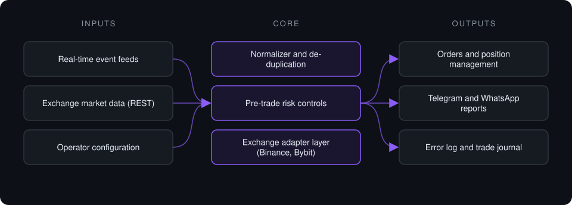

Case study · Private project
Exchange Execution Pipeline
Event-driven execution and monitoring system for crypto derivatives exchanges: ingest, validate, apply risk controls, execute through exchange APIs, and report every step.
This is a proprietary project. Source code is private. This page describes the system's architecture and capabilities only.
Problem it solves
Acting on time-sensitive market events by hand is slow and error-prone: messages arrive in bursts, duplicates slip through, order parameters have to match each exchange's precision rules, and nothing is logged. This system turns that into a single always-on service with validation, risk checks, exchange-correct order construction, and an audit trail, plus tooling to deploy and update it on a remote server.
Architecture

- Events stream in over a persistent connection, with no polling delay, and are normalized into one internal format.
- A de-duplication window drops repeated events before they reach execution.
- Each candidate order passes pre-trade risk controls and is validated against live market data and the exchange's tick-size and lot-size rules.
- The exchange adapter places and manages orders through the exchange API, confirming filled quantities from order history.
- Every action is reported to the operator on Telegram and WhatsApp and written to an error log and trade journal.
Key features
- Event-driven ingestion from multiple real-time sources
- Exchange adapters for Binance Futures and Bybit behind one interface
- Pre-trade risk controls and exchange-precision validation
- Position management after entry, including partial closes
- Single-instance lock, graceful shutdown and timestamped error logging
- SSH deployment tooling that provisions and updates the service on a VPS
Tech stack
- Python
- asyncio
- Telethon
- ccxt
- pybit
- Paramiko
- Linux VPS
What it does in practice
- Replaces manual order entry with a monitored, logged pipeline that runs unattended on a server.
- Gives the operator a live feed of every decision and order, and a record to review afterwards.
Not financial advice. Proprietary project, source code private. No performance figures are published.